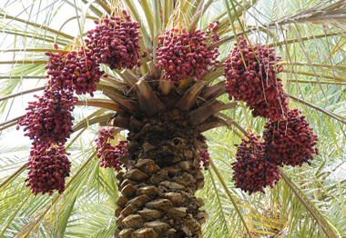

 খেজুরের গুনাগুন
পরিচিতি
হুযূর পাক ছল্লাল্লাহু আলাইহি ওয়া সাল্লাম এর প্রিয় ফল ছিল খেজুর। তিনি প্রতিদিন
সকালে ৭টি খেজুর খেয়ে নাস্তা করতেন। তিনি রমযানের রোযায় সকল মুমিন মুসলমানদেরকে খেজুর
ও পানি দিয়ে ইফতার করতে বলেতেন।এটি রোজার সুন্নতগুলোর মধ্য অন্যতম। একবার তিনি
বলেছিলেন কারো বাড়িতে যদি অল্প কিছু খেজুর থাকে তবে তাকে গরীব বলা যাবে না।
খেজুরের পুষ্টিগুন
খেজুর শুধু একটি খাবারই নয়, এর পুষ্টিমান ও অন্যান্য গুণাগুণ রোজাদার ও অন্যদের শরীরের অনেক চাহিদা যেমন পূরণ করে, পাশাপাশি বিভিন্ন ধরনের রোগ-ব্যাধি উপশমেও বেশ কার্যকর। খেজুরের মধ্যে আছে ক্যালসিয়াম, সালফার, আয়রন, পটাশিয়াম, ফসফরাস, ম্যাঙ্গানিজ, কপার, ম্যাগনেসিয়াম, ভিটামিন বি৬, ফলিক এসিড, আমিষ, শর্করাসহ একাধিক খাদ্যমান। খেজুরের বিভিন্ন ধরনের গুণাবলি নিয়ে দেখুন গুরুত্বপূর্ণ কিছু তথ্য।
খেজুরের গুনাগুন
ক্যানসার প্রতিরোধ :
খেজুর পুষ্টিগুনে সমৃদ্ধ এবং প্রাকৃতিক আঁশে পূর্ন। এক গবেষনায় দেখা যায় খেজুর পেটের
ক্যানসার প্রতিরোধ করে। আর যারা নিয়মিত খেজুর খান তাদের বেলায় ক্যানসারে ঝুকিটাও কম
থাকে।
দুর্বল হৃৎপিন্ড :
খেজুর হৃৎপিন্ডের কার্যমতা বাড়ায়। তাই যাদের দুর্বল হৃৎপিন্ড খেজুর হতে পারে তাদের
জন্য সবচেয়ে নিরাপদ ঔষধ।
মুটিয়ে যাওয়া রোধে :
কয়েকটা মাত্র খেজুর ুধার তীর্বতা কমিয়ে দেয়। এবং পাকস্থলীকে কম খাবার গ্রহনে
উদ্বুদ্ধ করে। এই কয়েকটা খেজুরই কিন্তু শরীরের প্রয়োজনীয় শর্করার ঘাটতি পূরন করে
দেয় ঠিকই।
মায়ের বুকের দুধ :
খেজুর বুকের দুধ খাওয়ানো মায়েদের জন্য সমৃদ্ধ এক খাবার। এই খেজুর মায়ের দুধের
পুষ্টিগুন আরো বাড়িয়ে দেয়। এবং শিশুর রোগ প্রতিরোধ মতা বাড়ায়।
হাড় গঠনে :
ক্যালসিয়াম হাড় গঠনে সহায়ক। আর খেজুরে আছে প্রচুর পরিমান ক্যালসিয়াম। যা হাড়কে
মজবুত করে।
অন্ত্রের গোলযোগ :
অন্ত্রের কৃমি ও তিকারক পরজীবী প্রতিরোধে খেজুর সহায়ক। এবং খেজুর অন্ত্রে উপকারী
ব্যাকটেরিয়া তৈরী করে।
দৃষ্টিশক্তি বৃদ্ধিতে :
খেজুর দৃষ্টি শক্তি বাড়ায়। সেই সাথে রাত কানা রোগ প্রতিরোধেও খেজুর অত্যন্ত কার্যকর।
কোষ্ঠ কাঠিন্য :
খেজুরে আছে এমন সব পুষ্টি গুন। যা খাদ্য পরিপাকে সাহায্য করে। এবং কোষ্ঠ কাঠিন্য রোধ
করে।
সংক্রমন :
যকৃতের সংক্রমনে খেজুর উপকারী। এছাড়া গলা ব্যথা, বিভিন্ন ধরনের জ্বর, সর্দি, এবং
ঠান্ডায় খেজুর উপকরী।
বিষক্রিয়া :
খেজুর অ্যালকোহল জনিত বিষক্রিয়ায় বেশ উপকারী। ভেজানো খেজুর খেলে বিষক্রিয়ায় দ্রুত
কাজ করে।
শিশুদের রোগ বালাই :
শিশুদের জন্যও খেজুর ভারী উপকারী। খেজুর শিশুদের মাড়ী শক্ত করতে সাহায্য করে।এবং কোন
কোন ক্ষেত্রে ডায়রিয়াও প্রতিরোধ করে।